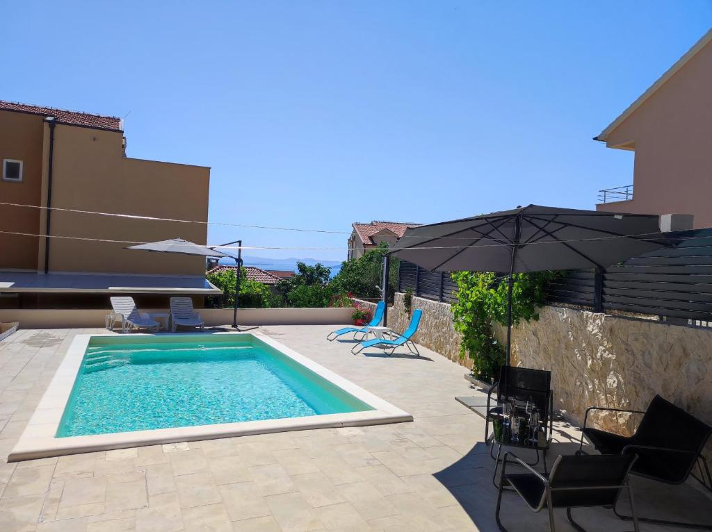

Moderno uređeni apartmani i sobe s vanjskim bazenom, u mirnom dijelu Vodica — savršeni za parove, obitelji i manje grupe.
Smještena u mirnom dijelu Vodica, Villa Helena nudi gostima vanjski bazen s prostranim sunčalištem, besplatan privatni parking i besplatan Wi-Fi. Bazen i sunčalište na raspolaganju su svim gostima tijekom cijelog dana.
Sve jedinice opremljene su klima uređajem, televizorom s ravnim ekranom i satelitskim programima, hladnjakom, kuhalom za vodu i privatnom kupaonicom. Apartmani dodatno imaju opremljenu kuhinju s grijaćom pločom, perilicom posuđa, mikrovalnom pećnicom i tosterom.
Gosti se mogu opustiti u vrtu, a roštilj u dvorištu slobodno je na raspolaganju. Plava plaža udaljena je petnaest minuta hoda, a centar Vodica desetak minuta hoda.

* Potpuno opremljena kuhinja dostupna je u apartmanima C2 i B2.
Kliknite na jedinicu za više detalja i fotografije.
Mirna zona, a sve nadohvat ruke — plaža, centar i ljepote šibenskog zaljeva.
Za upite o dostupnosti i rezervacije slobodno nas kontaktirajte — odgovaramo brzo.